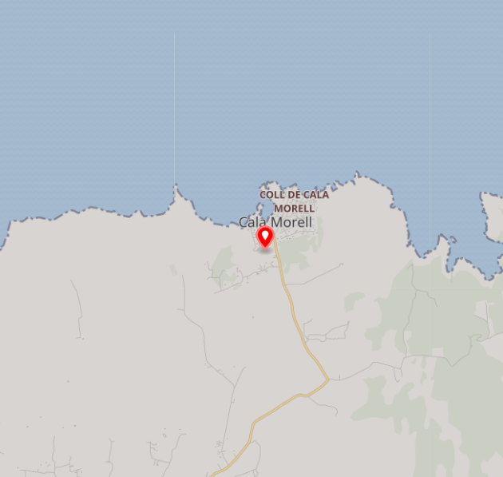

Descripció
Es tracta d'una de les necròpolis més espectaculars de l'illa, declarada Bé d'Interès Cultural (BIC) formada per un conjunt de catorze coves artificials o hipogeus, utilitzades totes elles com a llocs d'enterrament col·lectiu.
Ubicació
La necròpolis de Cala Morell està situada al barranc que s'obre darrere de la cala.

Imatges